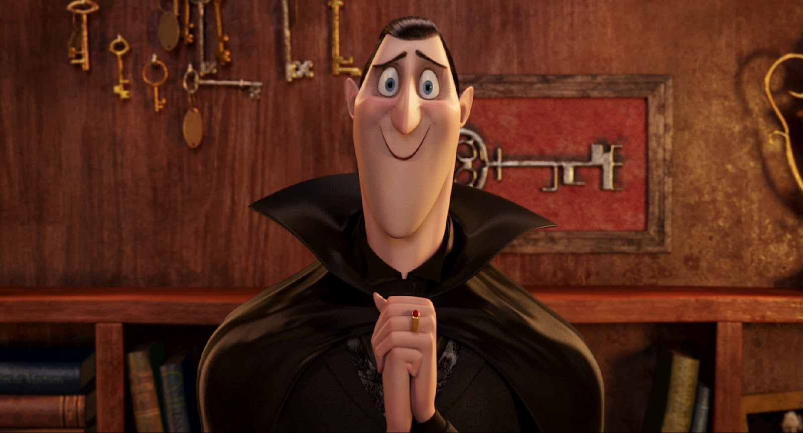

Sync Animation

8719491605

abhinavreddy1925@gmail.com


Learn Animation
Animation is the process of making the illusion of motion and change[Note 1] by means of the rapid display of a sequence of static images that minimally differ from each other. The illusion—as in motion pictures in general—is thought to rely on the phi phenomenon. Animators are artists who specialize in the creation of animation. Animation can be recorded with either analogue media, like a flip book, motion picture film, video tape, or on digital media, including formats with animated GIF, Flash animation or digital video. To display animation, a digital camera, computer, or projector are used along with new technologies that are produced. Animation creation methods include the traditional animation creation method and those involving stop motion animation of two and three-dimensional objects, such as paper cutouts, puppets and clay figures. Images are displayed in a rapid succession, usually 24, 25, 30, or 60 frames per second.
This is how animation is done.
Tips
We’re also excited to announce that the Animation Tips & Tricks resource is still available. That way, you can check out the great posts and fantastic animation references. Think of it as the best of both worlds. We look forward to sharing our new blog — and our ongoing love of animation — with all of you.
